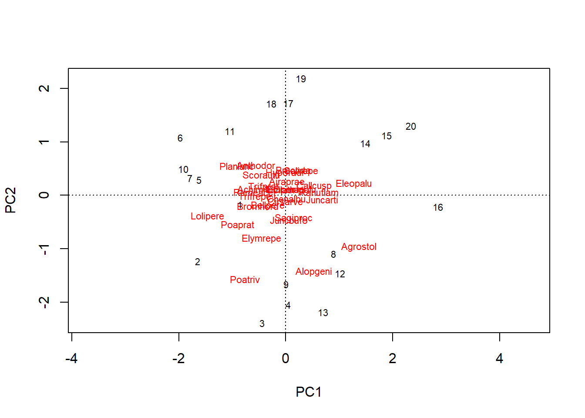
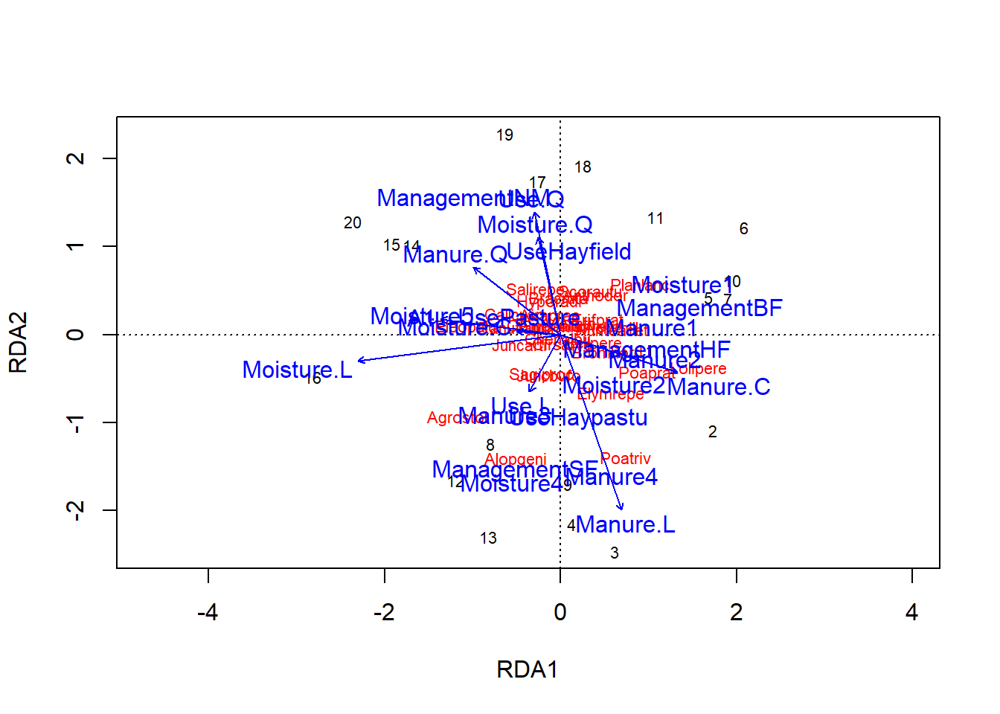

Aquet document son proves amb el pack Vegan per tractar dades ecologiques de comunitats i representar-les graficament. Per mes informació vegeu el link següent: https://github.com/vegandevs/vegan/.
Amb aquet paquet es pot generar grafics on es veuen les relacions de variables medioambientals i les comunitats d especies. En aquet cas particular es fara pel conjunt de dades dune que es el nombre total de cada una de les especies que es troben en 25 punts mostrejats.
En el cas de dune.env es la matriu associada de variables ambientals als 25 punts mostrejats....
Es mes
## Achimill Agrostol Airaprae Alopgeni Anthodor
## Min. :0.0 Min. :0.0 Min. :0.00 Min. :0.00 Min. :0.00
## 1st Qu.:0.0 1st Qu.:0.0 1st Qu.:0.00 1st Qu.:0.00 1st Qu.:0.00
## Median :0.0 Median :1.5 Median :0.00 Median :0.00 Median :0.00
## Mean :0.8 Mean :2.4 Mean :0.25 Mean :1.80 Mean :1.05
## 3rd Qu.:2.0 3rd Qu.:4.0 3rd Qu.:0.00 3rd Qu.:3.25 3rd Qu.:2.25
## Max. :4.0 Max. :8.0 Max. :3.00 Max. :8.00 Max. :4.00
## Bellpere Bromhord Chenalbu Cirsarve Comapalu
## Min. :0.00 Min. :0.00 Min. :0.00 Min. :0.0 Min. :0.0
## 1st Qu.:0.00 1st Qu.:0.00 1st Qu.:0.00 1st Qu.:0.0 1st Qu.:0.0
## Median :0.00 Median :0.00 Median :0.00 Median :0.0 Median :0.0
## Mean :0.65 Mean :0.75 Mean :0.05 Mean :0.1 Mean :0.2
## 3rd Qu.:2.00 3rd Qu.:0.50 3rd Qu.:0.00 3rd Qu.:0.0 3rd Qu.:0.0
## Max. :3.00 Max. :4.00 Max. :1.00 Max. :2.0 Max. :2.0
## Eleopalu Elymrepe Empenigr Hyporadi Juncarti
## Min. :0.00 Min. :0.0 Min. :0.0 Min. :0.00 Min. :0.00
## 1st Qu.:0.00 1st Qu.:0.0 1st Qu.:0.0 1st Qu.:0.00 1st Qu.:0.00
## Median :0.00 Median :0.0 Median :0.0 Median :0.00 Median :0.00
## Mean :1.25 Mean :1.3 Mean :0.1 Mean :0.45 Mean :0.90
## 3rd Qu.:1.00 3rd Qu.:4.0 3rd Qu.:0.0 3rd Qu.:0.00 3rd Qu.:0.75
## Max. :8.00 Max. :6.0 Max. :2.0 Max. :5.00 Max. :4.00
## Juncbufo Lolipere Planlanc Poaprat Poatriv
## Min. :0.00 Min. :0.0 Min. :0.0 Min. :0.0 Min. :0.00
## 1st Qu.:0.00 1st Qu.:0.0 1st Qu.:0.0 1st Qu.:0.0 1st Qu.:0.00
## Median :0.00 Median :2.0 Median :0.0 Median :3.0 Median :4.00
## Mean :0.65 Mean :2.9 Mean :1.3 Mean :2.4 Mean :3.15
## 3rd Qu.:0.00 3rd Qu.:6.0 3rd Qu.:3.0 3rd Qu.:4.0 3rd Qu.:5.00
## Max. :4.00 Max. :7.0 Max. :5.0 Max. :5.0 Max. :9.00
## Ranuflam Rumeacet Sagiproc Salirepe Scorautu
## Min. :0.0 Min. :0.0 Min. :0 Min. :0.00 Min. :0.0
## 1st Qu.:0.0 1st Qu.:0.0 1st Qu.:0 1st Qu.:0.00 1st Qu.:2.0
## Median :0.0 Median :0.0 Median :0 Median :0.00 Median :2.0
## Mean :0.7 Mean :0.9 Mean :1 Mean :0.55 Mean :2.7
## 3rd Qu.:2.0 3rd Qu.:0.5 3rd Qu.:2 3rd Qu.:0.00 3rd Qu.:3.0
## Max. :4.0 Max. :6.0 Max. :5 Max. :5.00 Max. :6.0
## Trifprat Trifrepe Vicilath Bracruta Callcusp
## Min. :0.00 Min. :0.00 Min. :0.0 Min. :0.00 Min. :0.0
## 1st Qu.:0.00 1st Qu.:1.00 1st Qu.:0.0 1st Qu.:1.50 1st Qu.:0.0
## Median :0.00 Median :2.00 Median :0.0 Median :2.00 Median :0.0
## Mean :0.45 Mean :2.35 Mean :0.2 Mean :2.45 Mean :0.5
## 3rd Qu.:0.00 3rd Qu.:3.00 3rd Qu.:0.0 3rd Qu.:4.00 3rd Qu.:0.0
## Max. :5.00 Max. :6.00 Max. :2.0 Max. :6.00 Max. :4.0## A1 Moisture Management Use Manure
## Min. : 2.800 1:7 BF:3 Hayfield:7 0:6
## 1st Qu.: 3.500 2:4 HF:5 Haypastu:8 1:3
## Median : 4.200 4:2 NM:6 Pasture :5 2:4
## Mean : 4.850 5:7 SF:6 3:4
## 3rd Qu.: 5.725 4:3
## Max. :11.500Aquet son uns quants exe,ples de grafics generats amb Vegan:
Aquet primer seria un grafic PCA sense restriccions

Aquet seria un grafic de model complet amb totes les variables ambientals 
a continuacio s inclou una app shiny.